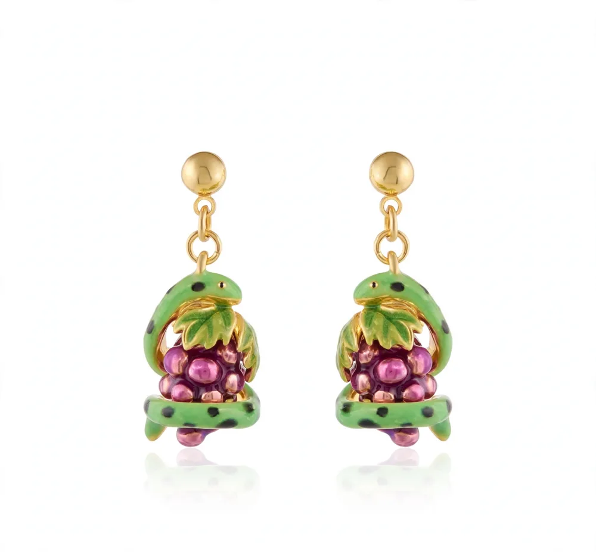

Digital Sales · Web
Product Pages & Landing Pages
Focused digital pages built around the product itself: strong imagery, useful information, a clear hierarchy and a defined inquiry or conversion path.
Discuss a Page
Existing Product Examples
One product. One focused story.


Page Development
Structure the page around what the buyer needs to understand.
Product facts, imagery, positioning and calls to action are developed as one connected page system.
Request a Project Review